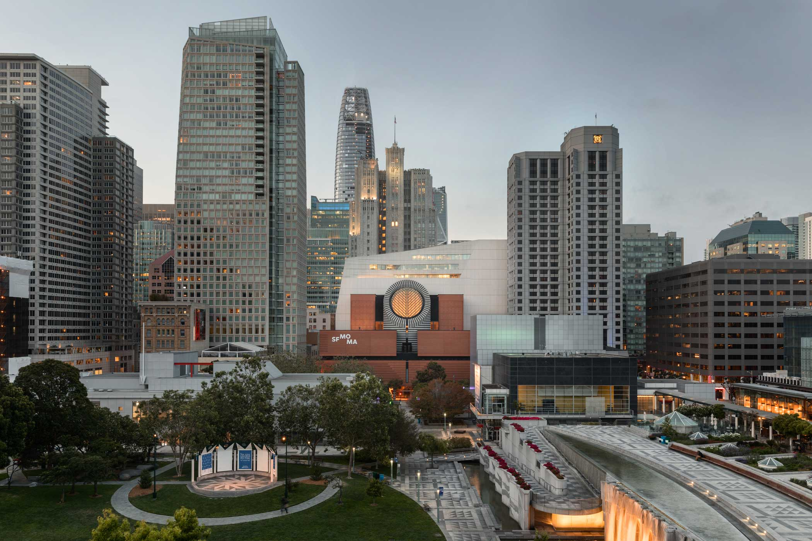

San Francisco
Museum of Modern Art,
Address 151 3rd St,
San Francisco, CA 94103
Museum of Modern Art,
Address 151 3rd St,
San Francisco, CA 94103
Photo copyright Takenobu Igarashi.
Created by Seoju Jung © 2019
Created by Seoju Jung © 2019

A to Z offers an exhaustive guide to Igarashi’s experiments with typography, featuring not only his celebrated print and physical works – many photographed specially for this publication – but also a first look, using never before seen archival work, at the plans, drawings and production drafts behind his iconic works. Spanning early print works, hand-drawn experiments, self-initiated sculptural pieces, and high-profile 3D identities for a range of international clients and institutions, A to Z is a long overdue overview of one of the most revered but least celebrated graphic designers of the 20th century.
SFMoMA
2019 - 2020
Winter Exhibition
2019 - 2020
Winter Exhibition
A to Z 3 Dimensional Typography
May 18, 2019 — January 5, 2020
Ongoing Floor 6
May 18, 2019 — January 5, 2020
Ongoing Floor 6

SCROLL